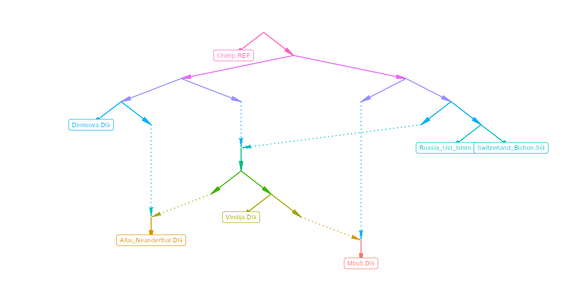

Under construction
Admixture graphs are models of the demographic history of a set of populations. f-statistics can be used to evaluate how well a specific admixture graph fits the data, and to estimate the drift lengths and admixture graphs in an admixture graph.
ADMIXTOOLS 2 makes it easy to work with admixture graphs. It allows you to read and write them in a number of different formats, create them from scratch, and modify them in several ways. You can either modify them manually, one edge or one node at a time, or automatically, by generating all possible variations of a certain type (for example all graphs that result from adding one admixture edge to the current graph).
The purpose of all this is to find well fitting models, and to find out which models are not compatible with the data. This is further simplified by find_graphs(), a function which automatically finds well fitting graphs by repeatedly selecting the best among a set of randomly modified graphs. ADMIXTOOLS 2 also introduces a method for testing whether one admixture graph fits the data significantly better than another.
f-statistics and admixture graphs
f4
Single \(f_4\)-statistics and D-statistics tell us what an admixture graph for four populations could look like. Let’s say we have four populations with these \(f_4\)- or D-statistics (Note that all other possible \(f_4\)-statistics can be computed from these two.):
\[f_4(A,B; C,D) = 0\] \[f_4(A,C; B,D) = 0.1\]
\(f_4(A,B; C,D) = 0\) suggests that \(A\) and \(B\) form a clade relative to \(C\) and \(D\), and a significantly positive value for \(f_4(A,C; B,D)\) suggests that there is some amount of genetic drift shared between \(A\) and \(B\) that is not shared by \(C\) and \(D\) (If \(f_4(A,C; B,D)\) were also zero, it would suggest a star phylogeny). The admixture graph connecting the four populations could therefore look like this:
g = matrix(c('R', 'n1', 'R', 'n2', 'n1', 'A',
'n1', 'B', 'n2', 'C', 'n2', 'D'), , 2, byrow = T) %>%
edges_to_igraph()
g %>% plotly_graphThe distance between the internal nodes \(n1\) and \(n2\) is given by \(f_4(A,C; B,D) = 0.1\).
An equally plausible admixture graph for this scenario is one in which \(A\) and \(B\) are not a clade in the strict sense, but in the sense that there is no overlap between the path from \(A\) and \(B\) and the path from \(C\) and \(D\).
g = matrix(c('R', 'A', 'R', 'n1', 'n1', 'B',
'n1', 'n2', 'n2', 'C', 'n2', 'D'), , 2, byrow = T) %>%
edges_to_igraph()
g %>% plotly_graphThis simple example demonstrates that
- f-statistics can be used to find plausible admixture graphs
- multiple different admixture graphs can fit the data equally well, and that
- both the topology, and the parameters of an admixture graph can be estimated with f-statistics
The example also shows that f-statistics cannot tell us where the root of a graph should be. For that it helps to include an outgroup in the graph so we know that the root is at the correct position.
f2
In any admixture graph, \(f_2\) of two populations is simply the sum of all path lengths that lie between the populations. For example, in the two graphs above, \(f_2(C, D) = n2|C + n2|D\), where \(n2|C\) is the edge going from \(n2\) to \(C\).
More generally, an admixture graph can be described by a set of equations which relate edges of the graph to f-statistics. There are \(\frac{k(k-1)}{2}\) equations for the \(f_2\)-statistics of all population pairs (\(k\) is the number of populations):
graph_equations(g, substitute = FALSE)$equations## # A tibble: 6 x 3
## pop1 pop2 equation
## <chr> <chr> <chr>
## 1 A B (R|A + R|n1 + n1|B)
## 2 A C (R|A + R|n1 + n1|n2 + n2|C)
## 3 A D (R|A + R|n1 + n1|n2 + n2|D)
## 4 B C (n1|B + n1|n2 + n2|C)
## 5 B D (n1|B + n1|n2 + n2|D)
## 6 C D (n2|C + n2|D)These equations tell us that the expected \(f_2\)-statistics for each pair is the sum of all edges that separate these two populations. In graphs with admixture, some population pairs will be connected through more than a single path. For those population pairs the expected \(f_2\) will be a weighted sum of all paths connecting the two populations, with the weights given by the relative ancestry proportions.
Here is a simple graph with one admixture event:
g = matrix(c('R', 'O', 'R', 'n1', 'n1', 'n2', 'n1', 'n3', 'n2',
'B', 'n2', 'n4', 'n3', 'a', 'n3', 'C', 'n4', 'a',
'n4', 'D', 'a', 'A'), , 2, byrow = T) %>% edges_to_igraph()
g %>% plotly_graphTo go from \(A\) to \(C\), there are now two paths: A short path through the right admixture edge, and a long path through the left admixture edges. \(f_2(A, C)\) is a weighted sum of these two paths:
graph_equations(g, substitute = FALSE)$equations %>%
filter(pop1 == 'A', pop2 == 'C') %>% as.matrix## pop1 pop2
## [1,] "A" "C"
## equation
## [1,] "a * (n1|n2 + n2|n4 + a|A + n1|n3 + n3|C) + (1 - a) * (a|A + n3|C)"\(a\) is the proportion of admixture coming through the left admixture edge, and \(1-a\) is the proportion coming from the right.
f4 ratios
The graph above illustrates nicely how the \(f_4\)-ratio test can be used to estimate admixture weights. This test estimates an admixture weight \(a\) as the ratio of two \(f_4\)-statistics, in this case \(a = \frac{f_4(O,B;C,A)}{f_4(O,B;C,D)}\). \(f_4(O,B;C,D)\) is exactly equal to the distance between \(n1\) and \(n2\), the left blue edge. That’s because \(O\) and \(C\) form a clade relative to \(B\) and \(D\), and this edge is the only connection between the two clades. (They are not clades in the usual sense of the word, but in the sense that there is no overlap between the paths from \(O\) to \(C\) and the paths from \(B\) to \(D\).) At the same time, \(f_4(O,B;C,A)\) is the intersection of paths going from \(O\) to \(C\), and from \(B\) to \(A\). Now there are two paths going from \(B\) to \(A\): A short one through the left, and a long one through the right admixture edge. Along the short path going to \(A\) from the left, there is no intersection with the path from \(O\) to \(C\), so the component of \(f_4(O,B;C,A)\) going through that path is zero. This means that all if \(f_4(O,B;C,A)\) is not equal to zero, it is only due to the long path from \(B\) to \(A\). Along that path, the intersection with \(O\) to \(C\) is exactly the left blue edge again. We now have two expressions for the length of that path: The first expression is \(f_4(O,B;C,D)\), and the second expression is \(a \times f_4(O,B;C,A)\), and so we can estimate \(a\) as \(\frac{f_4(O,B;C,A)}{f_4(O,B;C,D)}\).
For more complex graphs, drift lengths and admixture weights can be estimated in just the same way, although it is not always possible to express each estimated parameter as a simple ratio of two f-statistics. However, even without such simple expression, it is usually possible estimate graph parameters by numerically finding solutions to the system of graph equations. qpgraph() is doing just that: It finds the drift and admixture weights for a given graph which minimize the squared difference between the observed and the expected f-statistics.
f3
For historical reasons qpgraph() uses \(f_3\) rather than \(f_2\)-statistics when evaluating graphs. This doesn’t really make a difference since \(f_3\)- and \(f_4\)-statistics are just sums of \(f_2\)-statistics, which means that a graph equations system written in terms of \(f_2\)-statistics can be transformed into an equation system written in terms of \(f_3\)-statistics through the identity \(f_3(A; B, C) = \frac{1}{2} (f_2(A,B)+f_2(A,C)-f_2(B,C))\). There are more possible \(f_3\)- than \(f_2\)-statistics, but fixing any one population \(A\), and computing all possible \(f_3\)-statistics \(f_3(A; X_1, X_2)\), where \(X_1\) and \(X_2\) are all pairs of other populations, results in a system of equations of \(f_3\)-statistics with the exact same information as the system of equations of \(f_2\)-statistics.
The interpretation of \(f_2\)-statistics in a graph is simply the total path length between any two populations. The interpretation of \(f_3\)-statistics for some fixed population \(A\) and a pair of populations \(X_1\) and \(X_2\) is that \(f_3(A; X_1, X_2)\) is the distance between \(A\) and the point where \(X_1\) splits from \(X_2\). If there are admixture events and this point is not unique, one can imagine splitting the graph at each admixture node, which results in a set of trees. \(f_3(A; X_1, X_2)\) is then a weighted average of the distances between \(A\) and split points between \(X_1\) and \(X_2\) across all trees, with the weights given by the weights of all admixture edges along the path from \(X_1\) to \(X_2\).
Identifiability
Each admixture graph can be described by an equation system which relates drift lengths and admixture weights to f-statistics. However, it is not always possible to estimate all graph parameters at the same time. Consider the following graph, which differs from the earlier graph only in that population \(B\) is missing:
g = matrix(c('R', 'O', 'R', 'n1', 'n1', 'n4', 'n1', 'n3',
'n3', 'a', 'n3', 'C', 'n4', 'a', 'n4', 'D', 'a', 'A'), , 2, byrow = T) %>%
edges_to_igraph()
g %>% plotly_graph(fix = TRUE)ADMIXTOOLS 2 can tell us for any admixture graph what the unidentifiable edges are:
## # A tibble: 8 x 3
## from to type
## <chr> <chr> <chr>
## 1 n4 a admix
## 2 n3 a admix
## 3 R O edge
## 4 R n1 edge
## 5 n1 n4 edge
## 6 n4 D edge
## 7 n1 n3 edge
## 8 n3 C edgeIn this graph, all of the drift lengths and admixture weights are unidentifiable.
The unidentifiable edges can also be highlighted in the plot, here shown for the more complex example:
example_igraph %>% plotly_graph(highlight_unidentifiable = TRUE)This highlights two interesting facts:
The two edges connected root are not identifiable: We can estimate how much drift has occured on these two edges in combination, but it is not possible to attribute it to either of the two edges. The penalization terms that are used during the fitting of admixture graphs will ensure that both edges are always estimated to be of the same length.
The drift edges directly adjacent to a admixture edge can not all be estimated at the same time.
To see what this means in practice, we simulate data under this admixture graph, and the test whether we can recover the correct parameters:
f2sim = f2_from_simulation(example_igraph)Without specifying any parameters in this simulation, the amount of drift happening along each edge will be directly proportional to the distance it covers along the y-axis, and each admixture event will be in 30/70 proportions.
Now we can test which edges are estimated accurately:
qpgraph(f2sim, example_igraph)$edges %>%
plotly_graph(highlight_unidentifiable = TRUE)The estimated amount of drift should be very similar on all the identifiable edges, but the estimates are off for some of the unidentifiable edges. In this case, all three 30/70 admixture proportions are accurately recovered, but this is just a consequence of simulating equal amounts of drift along each edge. When simulating different amounts of drift, but still keeping all three 30/70 admixture proportions, it becomes clear that only the identifiable admixture weights at node N2N4 are estimated accurately:
qpgraph(f2sim2, example_igraph)$edges %>% plotly_graph(highlight_unidentifiable = TRUE)If a graph has non-identifiable edges, it means that the estimated values for those edges should be treated with caution. However, the graph itself can still be a valid model. In particular, the fit of the graph (likelihood score or worst residual) will not be meaningfully affected by the presence of non-identifiable edges.
Graphs in ADMIXTOOLS 2
ADMIXTOOLS 2 can read and write graphs in a number of different formats, including the format used by the original ADMIXTOOLS software and DOT format, but internally it uses only the following two representations of admixture graphs:
- An edge list
- This is either a matrix or a data frame where each edge is in a different row. The first column (
from) contains the names of the source nodes, and the second column (to) contains the names of the target nodes. No distinction is made between admixture edges and drift edges, or between different types of nodes. Optionally, there are two more columns (lowerandupper), which put constraints on the length of an edge. For admixture edges, these constraints should be between 0 and 1, and for drift edges they can range from 0 to infinity. No constraints are indicated byNA.
- An
igraphgraph object
- This format is used for most operations that modify graphs, since the igraph package provides many useful functions for working with graphs. If not otherwise specified, functions that take graphs as input expect a graph in this format.
To convert an admixture graph from one of these representations to the other, you can use the igraph function igraph::graph_from_edgelist() and igraph::as_edgelist().
Valid graphs
A valid admixture graph in ADMIXTOOLS 2 has to satisfy a number of conditions:
- It has to be a directed, acyclic graph
- All nodes have to be connected and there can’t be any duplicated edges
- No node should have more than two incoming or outgoing edges
- Each terminal node should have only one incoming edge
The function is_valid() tests whether a graph satisfies these conditions.
The third condition prohibits so-called multifurcations, or politomies. The function split_multifurcations() turns a graph with multifurcations into a graph without multifurcations. At the same time, it constrains the newly introduced edges to be near zero, so that while fitting the graph, the multifurcations will be respected.
The last condition ensures that each terminal population can have drift which is shared with no other population.
Creating and loading admixture graphs
The examples above show how admixture graphs can be created from scratch in R: You create a two column matrix where each row represents and edge, with the first column the origin, and the second column the destination.
You can also generate random graphs with your choice of population labels and a set number of admixture events:
pops = unique(dplyr::starwars$species)
newgraph = random_admixturegraph(pops, numadmix = 15)
plotly_graph(newgraph)To load an existing graph, use parse_qpgraph_graphfile() if it’s in the original ADMIXTOOLS format, read_table2() if it’s an edge list, or readRDS() if it was saved in R using saveRDS().
Modifying admixture graphs
Admixture graphs can be modified using the following functions:
insert_edge(example_igraph, from = "N2N1|Vindija.DG", to = "N3N1|Denisova.DG")
delete_admix(example_igraph, from = "N2N2", to = "N2N4")
insert_leaf(example_igraph, "newpop", from = "N4N", to = "Switzerland_Bichon.SG")
delete_leaf(example_igraph, "Switzerland_Bichon.SG")But it’s probably easier to modify a graph interactively using the ADMIXTOOLS 2 GUI.
Below you can see how a new admixture edge is added to a graph:

Semi-automated graph exploration
Rather than modifying admixture graphs manually and only testing a small number of models, you can start with a graph and let ADMIXTOOLS 2 generate and evaluate graphs for you.
The following functions take a graph and return lists of new, similar graphs:
newgraphs = graph_plusone(example_graph)
newgraphs = graph_minusone(example_graph)
newgraphs = graph_minusplus(example_graph)
newgraphs = graph_flipadmix(example_graph)
newgraphs = graph_splittrees(example_graph)To evaluate the new graphs, type:
newgraphs %>%
rowwise %>%
mutate(res = list(qpgraph(example_f2_blocks, graph))) %>%
unnest_wider(res) %>%
arrange(score)or, if you want to parallelize this,
newgraphs %>%
mutate(res = furrr::future_map(graph, ~qpgraph(example_f2_blocks, .))) %>%
unnest_wider(res) %>%
arrange(score)## # A tibble: 8 x 7
## name graph edges score f2 f3 ppinv
## <int> <list> <list> <dbl> <list> <list> <list>
## 1 6 <igrap… <tibble [12 … 19653. <tibble [21 … <tibble [21 … <dbl[,21] [21 …
## 2 8 <igrap… <tibble [12 … 19653. <tibble [21 … <tibble [21 … <dbl[,21] [21 …
## 3 2 <igrap… <tibble [18 … 26962. <tibble [21 … <tibble [21 … <dbl[,21] [21 …
## 4 4 <igrap… <tibble [18 … 53066. <tibble [21 … <tibble [21 … <dbl[,21] [21 …
## 5 3 <igrap… <tibble [12 … 62301. <tibble [21 … <tibble [21 … <dbl[,21] [21 …
## 6 5 <igrap… <tibble [12 … 64137. <tibble [21 … <tibble [21 … <dbl[,21] [21 …
## 7 7 <igrap… <tibble [12 … 64137. <tibble [21 … <tibble [21 … <dbl[,21] [21 …
## 8 1 <igrap… <tibble [12 … 64137. <tibble [21 … <tibble [21 … <dbl[,21] [21 …Fitting a single admixture graph
Edge weight optimization
qpgraph() tries to find the admixture- and drift-edge weights for a given graph topology which are most consistent with the observed \(f_3\)-statistics. The optimization of admixture weights requires initial values for these weights. Occasionally, the initial values have an effect on the final weight estimates because the optimization gets stuck in a local optimum. To avoid this, the qpgraph() weight optimization is repeated with different randomly chosen combinations of starting weights, and the final likelihood score represents the best score out of all tries. By default, 10 different random combinations of starting weights are evaluated. Decreasing this number can speed up qpgraph(), and increasing it can reduce the risk of missing the global optimum.
To get a better sense of how stable the edge weight optimization is, it makes sense to inspect the opt output of qpgraph(). This data frame contains all random initial weight combinations, as well as the optimized weights, final scores (value) and additional information about the optimization generated by the optim() function.
In this example, the optimization is very stable, and the initial values do not affect the estimated weights or the score:
example_winner$opt[[1]]## X1 X2 X3 p1 p2 p3 value fevals
## 1 0.07096771 0.5570287 0.2760519 0.3977308 0.6825699 0.2061932 4.001206 51
## 2 0.52067226 0.2790785 0.2311112 0.3977306 0.6825697 0.2061933 4.001206 13
## 3 0.04703453 0.8426236 0.1589736 0.3977306 0.6825697 0.2061933 4.001206 13
## 4 0.23402753 0.6483083 0.9764668 0.3977306 0.6825697 0.2061933 4.001206 15
## 5 0.04859723 0.2443325 0.6712799 0.3977306 0.6825697 0.2061934 4.001206 51
## 6 0.64079765 0.6574552 0.9912520 0.3977306 0.6825697 0.2061933 4.001206 12
## 7 0.97251921 0.1531614 0.2553865 0.3977306 0.6825697 0.2061933 4.001206 30
## 8 0.09519617 0.7965518 0.7882128 0.3977306 0.6825697 0.2061933 4.001206 15
## 9 0.99480784 0.2439424 0.1490095 0.3977306 0.6825697 0.2061933 4.001206 14
## 10 0.61758018 0.6886023 0.3912047 0.3977306 0.6825696 0.2061933 4.001206 10
## gevals convergence
## 1 51 52
## 2 13 0
## 3 13 0
## 4 15 0
## 5 51 52
## 6 12 0
## 7 30 0
## 8 15 0
## 9 14 0
## 10 10 0Here, the optimization depends a bit more on the initial weights:
example_qpgraph_ref_results$opt## i.N2N4 i.N3N4 i.N3N8 e.N2N4 e.N3N4 e.N3N8 value fevals
## 1 0.7616225 0.34647487 0.412249106 0 0 0.00000000 19652.54 2
## 2 0.1795198 0.20519471 0.009456659 0 1 0.05947510 19219.98 27
## 3 0.5789027 0.75595585 0.173031624 0 1 0.05947507 19219.98 15
## 4 0.4161319 0.21328007 0.975338531 0 1 0.05947507 19219.98 7
## 5 0.9409036 0.96037222 0.944441426 0 0 0.00000000 19652.54 2
## 6 0.3354566 0.62811808 0.446383684 0 0 0.00000000 19652.54 2
## 7 0.6299324 0.09815806 0.213384736 0 0 0.00000000 19652.54 2
## 8 0.2220927 0.04966934 0.616733615 0 1 0.05947507 19219.98 7
## 9 0.8463281 0.83502828 0.372245495 0 0 0.00000000 19652.54 2
## 10 0.6660239 0.97142558 0.848605360 0 0 0.00000000 19652.54 2
## gevals convergence
## 1 2 0
## 2 27 0
## 3 15 0
## 4 7 0
## 5 2 0
## 6 2 0
## 7 2 0
## 8 7 0
## 9 2 0
## 10 2 0The range of estimated weights for each admixture edge is also stored in the low and high columns of the edges data frame returned by qpgraph(). The plot_comparison() function visualizes that information with gray error bars.
plot_comparison(example_qpgraph_ref_results, example_qpgraph_ref_results)
Regularization terms
There are two regularization terms used in qpGraph, which make matrix inversions more stable.
One is called diag and is added to the covariance matrix of fitted branch lengths (after multiplying it by the mean of the diagonal elements). It is the same as the diag parameter in the original qpGraph program and defaults to 10-4. Increasing diag will shift the likelihood scores to be further away from zero. This regularization term ensures that edge weights will be evenly distributed across a set of edges whose weights could otherwise not be determined unambiguously. (As is often the case with the two edges originating in the root node.)
The other regularization term is added to the diagonal elements of the \(f_3\) covariance matrix (after multiplying it by the mean of the diagonal elements). It is called diag_f3 and defaults to 10-5. In the original qpGraph program it is fixed at that value. Increasing this factor has a small effect on admixture weights and branch lengths, and will shift the likelihood scores to be closer to zero.
The regularization terms affect the likelihood score, so they should be kept constant whenever fits of different graphs are compared to each other.
Automatic graph optimization
An advantage of being able to quickly evaluate a single model using precomputed f-statistics is that we can evaluate many different graphs in order to find graph topologies with good fits.
The function find_graphs() attempts to automatically find admixture graphs that are compatible with the observed f-statistics. It generates and evaluates numgraphs admixture graphs in numgen generations, and in each generation selects and modifies the best graphs.
opt_results = find_graphs(f2_blocks, pops, outpop = pops[1], numrep = 200,
numgraphs = 100, numgen = 20, numsel = 5, numadmix = 3)The output of find_graphs() (opt_results) will be a nested data frame, with each tested model in one line. Some columns in this data frame, like score, are regular numbers, while other columns, like edges, are list-columns where each element is another data frame.
The following commands will extract the best fitting model overall, and the best fitting model from each independent repeat.
winner = opt_results %>% top_n(1, -jitter(score))
winners = opt_results %>% group_by(run) %>% top_n(1, -jitter(score)) %>% ungroup
winner$score[[1]]## [1] 4.009599
plot_graph(winner$edges[[1]])
It can take a while until find_graphs() finds graphs with good fits. To speed it up, it can be parallelized.
Comparing the fits of different graphs
If two different graphs model the same populations and the second graph has a better likelihood score than the first one, it suggests that the second graph is a better representation of the actual demographic history. That’s generally true, but there are two complications:
If the second graph is more complex (i.e. if it has more admixture events), it has more degrees of freedom and thus an unfair advantage over the first one. It might get a better score even if the simpler graph is closer to the true demographic history.
It is possible that the difference in scores is due to chance, and not because one of the two models really fits the data better. What if we had picked different samples from each population? Or what if we had picked different SNPs? Would the second model still be preferred over the first one?
ADMIXTOOLS 2 solves the first problem by computing out-of-sample scores, and the second problem by computing the fit of a graph using bootstrap-resampled SNP blocks.
Out-of-sample scores
qpGraph likelihood scores \(S\) are computed by comparing estimated f3-statistics \(g\) to fitted f3-statistics \(f\) - those that we would expect to observe under a given admixture graph. The difference between estimated and fitted f3-statistics, the residuals, are adjusted by the inverse covariance matrix of f3-statistics \(Q\), to get the likelihood score. If this covariance matrix was the identity matrix, the scores would just be the squared sum of residuals.
\[S = -\frac{1}{2} (g - f)' Q^{-1} (g - f)\]
Under this definition likelihood scores are actually negative, but usually the minus sign is dropped and positive scores are reported instead.
In fitting edge weights, qpGraph maximizes this likelihood score (bringing it closer to 0). To avoid overfitting, we can compute a new score \(S'\) after fitting the model, using SNPs (or SNP blocks) which haven’t been used for fitting the model:
\[S' = -\frac{1}{2} (g_{train} - f_{test})' Q^{-1} (g_{train} - f_{test})\]
These scores tend to be further away from zero, but they allow us to fairly compare models of different complexity to each other.
In ADMIXTOOLS 2, you can compute out-of-sample scores by providing the qpgraph() function with an f2_blocks_test argument.
nblocks = dim(example_f2_blocks)[3]
train = sample(1:nblocks, round(nblocks/2))
res = qpgraph(data = example_f2_blocks[,,train], example_graph,
f2_blocks_test = example_f2_blocks[,,-train])
res$score## [1] 9835.134
res$score_test## [1] 10223.71Bootstrap-resampled graph fits
Out-of-sample scores allow us to get fair comparisons for any two admixture graphs, but they still don’t tell us whether a difference is significant. For that, we can use bootstrap resampling of SNP blocks: Each graph is evaluated many times on a random subset of SNP blocks. The variation among those scores tells us whether the scores of both graphs are significantly different from one another.
To combine this idea with out-of-sample scores to prevent overfitting, we can use the SNP blocks which were not selected in each bootstrap iteration as the out-of-sample SNP blocks.
The following example shows how to test whether graph1 gives a significantly better fit than graph2:
pops = dimnames(example_f2_blocks)[[1]]
graph1 = example_winners %>% arrange(score) %>% pluck('igraph', 1)
graph2 = example_winners %>% arrange(score) %>% pluck('igraph', 100)
fits = qpgraph_resample_multi(example_f2_blocks, list(graph1, graph2), nboot = 100)
compare_fits3(fits[[1]]$score_test, fits[[2]]$score_test)Fitting a graph multiple times on different sets of SNPs is not only useful for comparing two graphs. It also allows us to put confidence intervals on the parameters estimated in a single graph.
fits = qpgraph_resample_snps(example_f2_blocks, example_igraph, boot = 100)
fits %>% summarize_fits() %>% plotly_graph(print_highlow = TRUE)Summarizing graphs
Admixture graphs for more than a few populations quickly become very complex. They contain a large amount of information about the relationship between the modeled populations, which is another way of saying that the number of possible graphs grows rapidly as the number of populations and the number of admixture events grows.
Often there are specific features of an admixture graph that are of primary interest. For example, whether a population is admixed or unadmixed, relative to the other modeled populations, or what the temporal order of two events is (whether one population split occurred before or after another population split).
ADMIXTOOLS 2 offers a number of functions that can summarize graphs by listing their features, as well as functions that can be used to test whether graphs exhibits specific features. This is useful in several contexts, for example it can constrain the search space for finding well fitting graphs, by not considering graphs with specific properties.
At the moment there are three types of features or constraints, and for each there is a function for listing the graph features, and a function for testing whether a graph meets certain constraints.
| Feature / Constraint | Summarize graph | Test graph |
|---|---|---|
| Number of admixture events | summarize_numadmix() |
satisfies_numadmix() |
| Order of events | summarize_eventorder() |
satisfies_eventorder() |
| Zero f4 | summarize_zerof4() |
satisfies_zerof4() |
Constraining the number of admixture events
To put constraints on the number of admixtures for some of our populations, we can create a data frame with columns pop, min, max. The following example shows how to specify that population C should have at least one admixture event, while D should be unadmixed:
constrain_cd = tribble(
~pop, ~min, ~max,
'C', 1, NA,
'D', NA, 0)This can be used to test whether a graph meets these constraints:
g = random_admixturegraph(5, 2)
satisfies_numadmix(g, admix_constraints = constrain_cd)## [1] FALSEIf we have a list of admixture graphs, we could select only those that meet the constraints:
graphlist = rerun(10, random_admixturegraph(5, 2))
graphlist2 = graphlist %>% keep(~satisfies_numadmix(., constrain_cd))We can also generate a random graph that satisfies these constraints:
random_admixturegraph(5, 2, admix_constraints = constrain_cd) %>% plotly_graphFinding valid qpAdm models
Every admixture graph maps to a specific set of valid qpAdm models. The function qpadm_models lists all valid qpAdm models for a graph. Models which are contained within larger valid models are not shown. The number of valid qpAdm models can be very large for big graphs, so you should only run this on small graphs.
mygraph = winners %>% pluck('igraph', 6)
plot_graph(mygraph)
qpadm_models(mygraph, add_outgroup = TRUE, nested = FALSE, abbr = 3)## # A tibble: 3 x 3
## target left right
## <chr> <chr> <chr>
## 1 Den Alt,Mbu Chi,Rus,Swi
## 2 Den Alt,Vin Chi,Rus,Swi
## 3 Den Mbu,Vin Chi,Rus,SwiThe only qpAdm models which are valid under this graph have Den as target and Chi, Rus, and Swi as right populations.
Valid qpAdm models need to satisfy the following criteria:
- There have to be more right populations than left populations
- The left populations should not form a clade with respect to any right population. This means that a qpgraph outgroup is not an informative right population, but it can be included anyway, with
add_outgroup. - Each set of left populations which forms a source for the target population has to form a clade with target at the exclusion of each right population. (Note: Check if that’s correct and if it can be stated in a better way.)